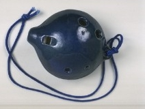
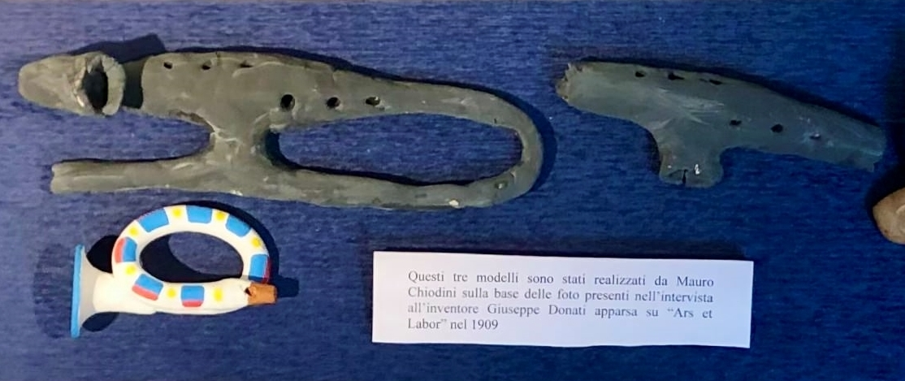
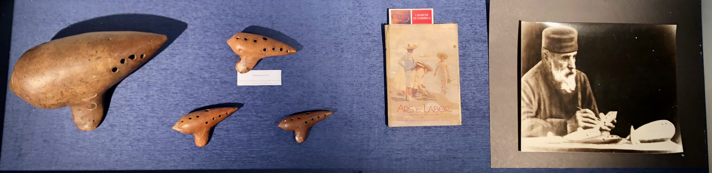
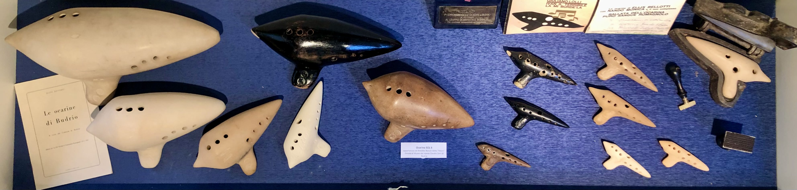
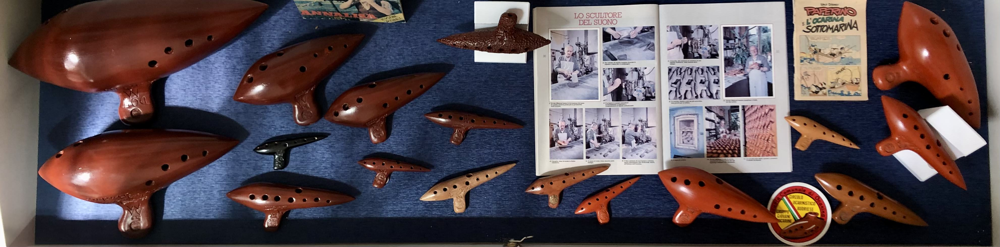

From the whistle to ocarina
All over the world, from Japan to the Americas, the majority of vessel flutes made of terracotta today are called "ocarinas", whether or not their shape is similar to the typical Budrio ocarina in the form of a submarine.
If we say that the ocarina was invented in Budrio in 1853 it is only partially true. Actually, terracotta flutes are among the oldest musical instruments ever invented by man. There is evidence of their presence thousands of years ago in China, South America and in the Mediterranean basin. There are a few Ancient Roman ocarinas on display in the musical instrument museum in Rome.
We can talk about the "invention" of the ocarina only if we refer to a particular vessel flute with definite musical characteristics and a shape which reminds us of a tiny submarine: the typical “ocarina of Budrio”.
But where does the name "ocarina" come from? The word is not really Italian but comes from Bolognese dialect and means "small goose".
The origin of the instrument goes back to terracotta whistles, strictly related to an agricultural pastoral tradition and often take on the form of animals close to man, or in any case are considered to be lucky, protective or magical, like the hen, the sheep, the goose, the owl or the lark etc.
First Prototypes
The goose shape was evidently the most common In the Bologna area if Giuseppe Donati (1836-1925), unanimously considered the inventor of the modern ocarina, maintained the name "ocarina" for his musical instruments, which however had little or nothing to do with the rudimentary, animal like, folk whistles in use at the time. Born in Budrio in 1836, Giuseppe Donati was in fact a good amateur musician. He knew how to play the clarinet and the piano and the few discordant sounds produced by the "ocarine" sold in country fairs were not to his liking.
So he decided to make one himself with more holes, so he could produce a scale of eight, well tuned notes. It seems that the first shape chosen was that of a small cornet in terracotta. During the firing process however the fragile piece broke into two parts: our young inventor, of only seventeen years of age, was very attracted to the simple, plain, central part and he decided to perfect it and make an instrument which could play any type of music.
Donati's true invention was however to make a group of ocarinas in tune with each other, of the same shape, but different in size and pitch. In 1863 a form of multiple instrument was created, played by more than one person and made up of first five and then seven instruments, capable of playing complex pieces: a result far beyond the limited possibilities of a solo player. Thanks to the international success of the concerts held by the group, the fame of the ocarina spread throughout Europe.
Giuseppe Donati (Budrio, 1836 – Milan, 1925)
Interview with the inventore

“Donati, first name Giuseppe, born in Budrio on 2 December 1836, had already finished the elementary school where he had studied Latin; learnt music theory and the piano and he played the clarinet in the town band, [...] when he suddenly decided to play a prank. He constructed a musical instrument similar to the small plump goose made of terracotta with beak and tail, which is still sold in fairs today. The difference between them was of a musical nature because the Donati ocarina, [...] with four holes on it's side, emitted a sound. Small simple melodies could be played in one octave. Musicians In Budrio liked the idea and so Donati made another piece (...). He formed an object with clay which was similar to a comet, but while he was handling it the clay cracked and the mouth piece and adjoining air passage fell to the ground. The part which was left gave Donati the idea for his ocarina, the one which was to reach such popularity. He set himself the task of creating some others, making holes in a comfortable position to accommodate all ten fingers.
Those were feverish days for young Donati, at the time only seventeen years of age. The whole of Budrio followed his progress and had high hopes for him. The Town of the ocarina and also "tagliatelle", admired and chosen by the people of Bologna for their summer excursions, foresaw his destiny. Donati's ocarina in fact enveloped it in glory. (...) Donati had his first stroke of genius after having finished five ocarinas of different sizes which together formed low and high notes with an extension comparable to that of a piano. The five instruments were put into the hands of five musicians, chosen amongst the foremost musicians in Budrio, including Donati. They formed a group and created enjoyment in the town for several weeks, travelling around the area, playing in drinking hostels and private homes.
Their musical programme initially only included dance music but then progressed to opera. The group actually performed "Il Miserere" from " Trovatore" and the prelude to "La Traviata". Their fame soon spread outside the town walls for many kilometres. After many years of success with concerts in Bologna, Ferrara, Padova, Trieste and Rome, the quintet came to an end where it had begun (in Budrio). The inventor of the ocarina went back to his clay instrument workshop. Every Sunday he went to sell his wares at the local fairs in the area with great success. He also managed to do good business with merchants in Germany and Austria. He moved the workshop from Budrio to Bologna and after many years from Bologna to Milan. Thousands of ocarinas have passed through his hands and he has earned thousands of lire. Donati now says I was rich but I have had many misadventures". By this he means that many troubles in his family have produced a great lack of finances. Up until recently the old man lived in a room in one of the houses in Via Palestrina which are now being demolished. We went to pay him a visit. He was one of the people being evicted. He was worried about not being able to find another home and was afraid of becoming one of the "homeless". It was a great problem for him to move house: where could he find another kiln to bake his ocarinas. In via Palestrina he seemed like one of those mysterious legendary old men, forever in search of the elixir of eternal life: with a large dressing gown draped around his tall bony figure, a strange nightcap on his head. His gown was as old as he was, of various indistinct shades of colour, creased and greasy. In his seventies, his face was illuminated by lustrous, vivid, sharp eyes, by the candour and fluidity of his beard, by his shrewd, typically Bolognese expression.... Instead of potions he was surrounded by ocarinas, tweezers, moulds and blocks of clay. He worked as though he were eighteen years old: He was finishing in the same way as he had begun"
This piece by Otello Cavara which appeared in the magazine'Ars et Labor" in 1909, is probably the only interview made with the inventor Giuseppe Donati when he was already an old man but still making ocarinas in Milan. It is almost certainly the main source of information about the history of the ocarina and the first few years of the group.
Fratelli Mezzetti
Alberto (Budrio, 1843 – London, 1906) and Ercole (Budrio, 1841 – Paris, 1913) Mezzetti
They were both primary school teachers and among the group of friends that helped Giuseppe Donati to perfect his instrument, resulting in the creation of the first septet of ocarinas and the founding of the first ocarina group. The group's musical success was such that they played in most major cities of Europe.
Ercole started up a workshop (for making ocarinas) in Paris in 1877, which he carried on until 1912. His ocarinas, some of which had a piston applied to vary the pitch, won numerous prizes in international competitions. Many of them are decorated in an Art Nouveau style. Alberto took residence in London in 1879. He could play many instruments well and not only was a music teacher and concert player but also sold the ocarinas made by his brother. He published an excellent workbook for the ocarina.
Heinrich Fiehn
Active in Vienna from 1876 to the 1930's
Fiehn was a young sculptor with a passion for music. One evening in 1876 he attended a concert of the group from Budrio on tour in Vienna. He was very impressed with this new instrument, so much so that he decided to become an ocarina maker himself.
The invention of a particular mould able to produce ocarinas in series at low cost and ability on the commercial side determined the distribution of his ocarinas all over the world, eliminating any other competitors. He launched the fashion for black ocarinas with gold decoration, which was soon copied by other makers. Due to the great commercial success Fiehn achieved, the American public for many years attributed the invention of the ocarina to Austria..
Cesare Vicinelli
Budrio, 1841 – Bologna, 1920
Cesare Vicinelli was also one of the friends who played with Donati in the local band who gave advice and collaborated in the laborious phase of perfecting the instrument. He played the guitar and the trombone. When Donati decided to move to Bologna in 1878, Vicinelli started his own workshop in Budrio. Vicinelli's ocarinas are still considered today to be the best for their quality of sound and design, so much so that the artisan was considered the “Stradivari of the ocarina”. He was the first (at least in Italy) to mechanize the construction of ocarinas using metal moulds.
A curious story, between myth and reality: according to some records Vicinelli argued with the group while on tour in Portugal (it seems he had a very irritable character), made a completely new set of ocarinas and after having taught some local musicians how to play them, left with these musicians for Brazil.
Guido Chiesa
Budrio, 1884 – Budrio, 1965
He was a pupil and assistant of Vicinelliand after Vicinelli's death he inherited the house and workshop which were on the site of the present day municipal swimming pool. His ocarinas are similar in shape and sound to those of Vicinelli. He was the only ocarina maker in Budrio for almost 40 years and exported them all over the world. On occasions due to the intensification in the production, the tuning of them was not always perfect.
Emilio Cesari
Budrio, 1888 – San Remo, 1962
He held a diploma in the French horn. In 1919 he formed a company with the then elderly Vicinelli in order to make ocarinas. After a few months however Vicinelli died and the company obviously broke up.
After having moved to San Remo in 1929, where he won a competition playing the French horn at the Casino, Cesari started a small workshop there and began to send his ocarinas all over the world. He produced well tuned instruments and often followed the fashion of the moment (for example the ocarina with the musical key of the sax on it as a tribute to jazz music, or the ocarina in the form of a pistol with the inscription "halt!, who goes there?" dating back to the war period).
Arrigo Mignani
Budrio, 1918 – Budrio, 1997
He was an excellent violin player and classical guitar player. At the beginning of the 1960's he bought some moulds from the heirs of Emilio Cesari and began to make ocarinas in Budrio. He carried on this activity until 1991 and was also a member of the group from 1963 to the beginning of the 70's. His instruments had a very strong sound and are considered excellent, particularly for solo players of typical dance music from Romagna.
